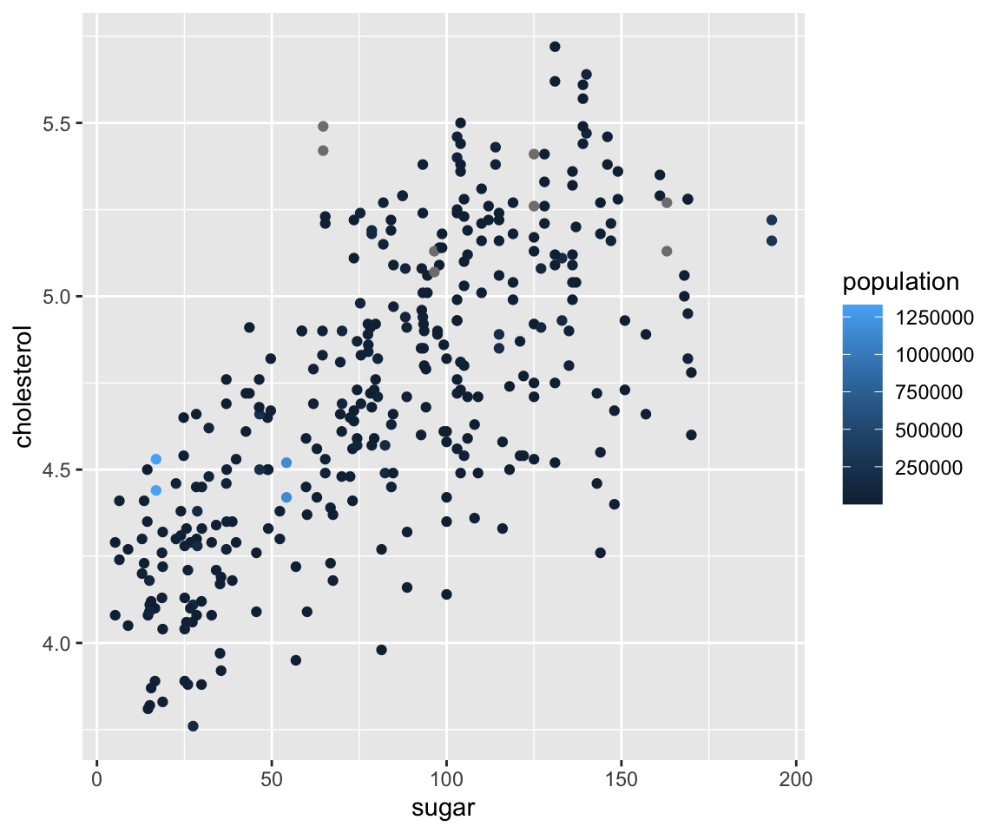

4.3 Aesthetics in ggplot
Knowing how to generate a scatterplot using geom_point(), let’s discuss one of the most important aspects in a geom, namely, the aesthetics. Aesthetics include various parameters that you can change that affect the appearances of a plot. Some commonly used aesthetics include color, size, shape, and so on.
Note that although we will introduce aesthetics via the example of scatterplot, they are used for all kinds of plots which will be covered at a later time.
4.3.1 Global Aesthetics
First, we discuss global aesthetics, which change certain features of a plot globally.
Let’s first review the code we used to generate the scatterplot between liv_area and sale_price.
library(ggplot2)
library(r02pro)
ggplot(data = sahp) + geom_point(mapping = aes(x = liv_area, y = sale_price))
Now, let’s see how to set global aethetics in geom_point().
a. Color
To change the color of all points, you can set the color argument in the geom_point() function. Note that it is placed outside of the aes() function.
ggplot(data = sahp) + geom_point(mapping = aes(x = liv_area, y = sale_price), color = "red")
Clearly, all points are changed to red.
b. Size
Similarly, you can set the size element in the geom_point() function to change the size of the all points.
ggplot(data = sahp) + geom_point(mapping = aes(x = liv_area, y = sale_price), size = 3)
You may notice that the points are now bigger than before. Looking at the plot, many points are overlapping with each other, which is sometimes called overplotting. To solve this issue, you can change the transparency level of the points by setting the alpha argument.
c. Transparency
ggplot(data = sahp) + geom_point(mapping = aes(x = liv_area, y = sale_price), size = 3, alpha = 0.5)
By setting alpha = 0.5, the points become more visible and the overplotting problem is largely alleviated.
d. Shape
Lastly, we can also change the shape of the points from the default one (circle) to other shapes by the shape argument in geom_point().
ggplot(data = sahp) + geom_point(mapping = aes(x = liv_area, y = sale_price), shape = 2)
e. Multiple Aesthetics
Of course, we can combine multiple global aesthetics in the same plot.
ggplot(data = sahp) + geom_point(mapping = aes(x = liv_area, y = sale_price), color = "red", size = 3, shape = 2)
Here, we have all points red, size of 3, and of triangle shape.
4.3.2 Map Discrete Variables to Aesthetics
Knowing how to use global aesthetics to change the global appearance of a plot, you may want to differentiate different groups with different values of aesthetics. For example, you want to use different colors according to the different house_style in the scatterplot. To do this, you can map a discrete variable (say house_style), to an aesthetic (say color) by setting color = house_style as an argument in the aes() function.
a. Color
Now, let’s map house_style to color.
ggplot(data = sahp) + geom_point(mapping = aes(x = liv_area, y = sale_price, color = house_style), size = 3)
From this figure, we can clearly see houses of different styles in distinct colors. In addition, ggplot automatically created a legend to show the correspondence between the house styles and colors.
Sometimes, you may want to use specific colors for different values of the factor. To customize the colors, you can add a layer to the ggplot with function scale_colour_manual with argument values containing a character vector consisting of the colors.
ggplot(data = sahp) + geom_point(mapping = aes(x = liv_area, y = sale_price, color = house_style), size = 3) + scale_colour_manual(values = c("red", "blue", "green", "orange","purple"))
Similarly, you can also map central_air to color.
ggplot(data = sahp) + geom_point(mapping = aes(x = liv_area, y = sale_price, color = central_air), size = 3)
The plot tells us the majority of the houses have central AC and the ones without it have relatively lower sale price.
b. Size
In addition to color, you can also map a discrete variable to the size aesthetic.
ggplot(data = sahp) + geom_point(mapping = aes(x = liv_area, y = sale_price, size = house_style), alpha = 0.5) You can see from the plot that the sizes of the points are now different according to the
You can see from the plot that the sizes of the points are now different according to the house_style. To alleviate the overplotting issue, we added a global aesthetic alpha = 0.5, making all points more transparent.
There is a warning message: “Using size for a discrete variable is not advised.” The reason is that different sizes may implicitly indicate a particular ordering of the groups, which are usually not clear for a discrete variable.
c. Shape
We can also map a discrete variable to the shape aesthetic.
ggplot(data = sahp) + geom_point(mapping = aes(x = liv_area, y = sale_price, shape = house_style), size = 2, alpha = 0.5) Again, we added global aesthetics
Again, we added global aesthetics size and alpha to make the points more visible.
d. Multiple mappings
Just like global aesthetics, you can also have multiple mappings for aesthetics, and mix them with the global aesthetic when necessary.
ggplot(data = sahp) + geom_point(mapping = aes(x = liv_area, y = sale_price, color = house_style, shape = central_air), size = 3)
Here, we can see the points have different colors according to house_style and are of different shapes depending on the value of central_air. Note that there are two legends on the plot showing the color and shape, respectively.
4.3.3 Change Legend Order via Factors
Let’s first generate a scatterplot between liv_area and sale_price where we map the heat_qual (heating quality) to the color aesthetic.
ggplot(data = sahp) + geom_point(mapping = aes(x = liv_area, y = sale_price, color = heat_qual), size = 3) Looking at the legend, you can see that different
Looking at the legend, you can see that different heat_qual values are in alphabetical order as introduced in Section 2.4 when we introduced the ordering of character vectors. Sometimes, you may want to arrange these values in a different order in the plot, for example from the worst to the best. To achieve this, you can use the factor() function with the argument levels which specifies the desired order.
sahp$heat_qual <- factor(sahp$heat_qual, levels = c("Fair","Average","Good","Excellent"))
ggplot(data = sahp) + geom_point(mapping = aes(x = liv_area, y = sale_price, color = heat_qual), size = 3) After changing the
After changing the heat_qual variable to a factor with desired levels, you can see the order in the legend changes accordingly.
4.3.4 Map Continuous Variables to Aesthetics
Knowing how to map discrete variables to aesthetics, it is natural to ask whether we can also map continuous variables to aesthetics. The answer is positive.
a. Color
Let’s again start with the color aesthetic by mapping oa_qual to color.
ggplot(data = sahp) + geom_point(mapping = aes(x = liv_area, y = sale_price, color = oa_qual)) Here, we can see the color of all points vary from dark blue to light blue, depending on the value of
Here, we can see the color of all points vary from dark blue to light blue, depending on the value of oa_qual. Instead of showing different colors in the discrete variable case, the legend now displays a bar showing a continuous color scale according to the value of oa_qual. To customize the color scale, you can add another lay using the function scale_color_continuous with arguments low and high being two colors corresponding to the colors when the variable is of low and high values, respectively.
ggplot(data = sahp) + geom_point(mapping = aes(x = liv_area, y = sale_price, color = oa_qual)) + scale_color_continuous(low = "green", high = "red") Here, the low value of
Here, the low value of oa_qual is mapped to green color and the high value of oa_qual is mapped to red color. You can also try out the following examples.
ggplot(data = sahp) + geom_point(mapping = aes(x = liv_area, y = sale_price, color = oa_qual)) + scale_color_continuous(low = "yellow", high = "blue")ggplot(data = sahp) + geom_point(mapping = aes(x = liv_area, y = sale_price, color = bedroom), size = 3) + scale_color_continuous(low = "yellow", high = "blue")b. Size
In addition to the color aesthetic, we can also map continuous variables to the size aesthetic.
ggplot(data = sahp) + geom_point(mapping = aes(x = liv_area, y = sale_price, size = lot_area)) In this example, you can see the points corresponding to larger
In this example, you can see the points corresponding to larger lot_area values are larger than those corresponding to smaller lot_area values. Note that although the legend only shows three different sizes, the actual size of the point is continuous corresponding to the value of lot_area.
How about the shape aesthetic? Can we map a continuous variable to it? Let’s try it.
ggplot(data = sahp) + geom_point(mapping = aes(x = liv_area, y = sale_price, shape = lot_area)) #continuous variable can not be mapped to shapeYou will see an error message: “A continuous variable can not be mapped to shape.” The reason is intuitive: the shape can’t be naturally changed continuously.
4.3.5 Map Converted Logical Variable to Aesthetics
Lastly, you can also create logical variables on the fly and map them to aesthetics. For example, if you want to differentiate the points according to whether the value of lot_area is larger than 1e4, a logical variable lot_area > 1e4 can be created.
ggplot(data = sahp) + geom_point(mapping = aes(x = liv_area, y = sale_price, shape = lot_area > 1e4), size = 3)
We can see the houses with lot_area larger than 1e4 are of different shapes from those with less than 1e4 in lot area.
Let’s see another example where we want to highlight the different between two-story houses from the other types.
ggplot(data = sahp) + geom_point(mapping = aes(x = liv_area, y = sale_price, shape = house_style == "2Story"))
Now, the two-story houses are triangles and other houses are circles.
Clearly, you can easily create new logical variables using any logical operations on existing variables, and map them into any aesthetics just like the existing categorical variables.
4.3.6 Exercises
Using the sahp dataset with the ggplot2 package, answer the following questions.
- Create a scatterplot to visualize the relationship between
lot_area(on the x-axis) andsale_price(on the y-axis). - In the scatterplot from Q1, change the size of all points to 3 and use different colors according to the value of
house_style. - Change legend order in the scatterplot from Q2 to be “1Story,” “SFoyer,” “1.5Fin,” “2Story,” “SLvl” from top to bottom.
- In the scatterplot from Q1, change the shape of all points to triangle and map
bedroomto the color aesthetic. Then map the low value ofbedroomto the yellow color and map the high value ofbedroomto the green color. - In the scatterplot from Q1, change the color of all points to green and use different shapes to distinguish whether the house has more than 3 bedrooms.